Applying Expert System Technology to Code Reuse with Pyke
PyCon 2008, Chicago
| Author: | Bruce Frederiksen |
|---|---|
| Date: | Fri, 14 Mar 2008 |
| Web: | pyke.sourceforge.net |
| Copyright: | © 2008, Bruce Frederiksen |
Abstract
This paper explores a new approach to code reuse using a backward-chaining rule-based system, similar to prolog, to generate a function call graph before the functions are called. This is compared with current solutions which build the call graph as the functions are called.
This approach is introduced through an open source project called Pyke (Python Knowledge Engine).
Finally, the initial results show that the utility of this approach far exceeds expectations; leading to something more akin to automatic programming rather than adaptable libraries. A call for help is given to explore the capabilities of this approach across different domains.
The Thinking that Led to Pyke
The Need for Code Reuse
At one of my contracting jobs, they had many clients running essentially the same program, but each client needed minor code modifications. Their objective was to maximize code reuse.
What is Code Reuse?
The first question is what does "code reuse" mean? And the answer that seems most logical is function reuse. Where code modifications are required, a new function can be created incorporating those modifications.
Then the remaining task is to bring the proper collection of functions together for each client.
This gets more complicated as several versions of many functions will be produced for various clients that are all available for reuse by the next client. So it's not simply the case that there will be one standard default version of each function, and then several one-off customized versions that each only apply to a single client.
The result of this function combination exercise is a function call graph.
Example 1
Let us imagine that we start out with two functions for client1:
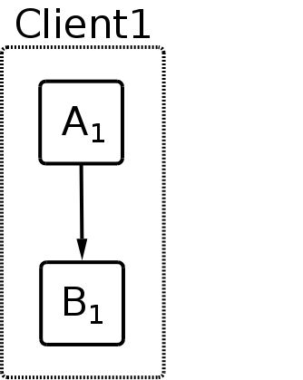
And then client2 comes along.
Let us first suppose that we need a new version of function A, but can reuse function B1:
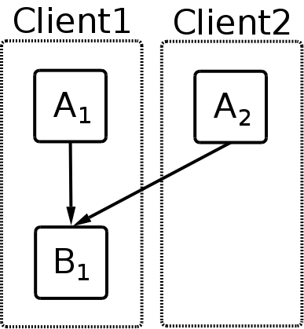
This is easy in any programming language and leads naturally to the idea that the functions to reuse are the lower-level ones, which can be placed into libraries.
But now let us suppose the opposite; that we need a new version of function B, but can reuse function A1:
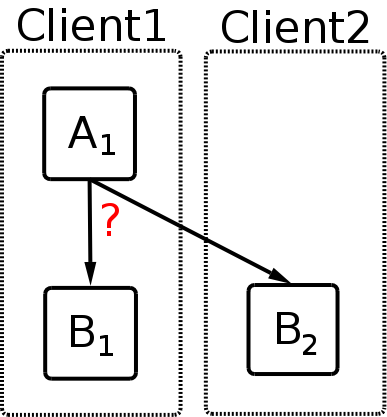
This is where we need help.
Current Solutions
The current solutions are all run-time solutions that trap the call from function A1 to some function B and figure out which function B to use when the call is made. For example:
- O-O Dynamic Binding
- Zope Adapters
- Generic Functions
Current Solution Limitations
These solutions are all limited for the same reason. Let's look at another example to see why.
Example 2
Real world programs have many more than two functions, but we can start to see the limitations of the current solutions by looking at a three function example.
We start with one client and three functions.
When client2 was added, it could only share function A1 and had to have a new B (B2) that needs a new function with a different call interface than C, so we'll call it D1.
Then along comes client3. This time things are looking up, because all we need is a new version of function D:
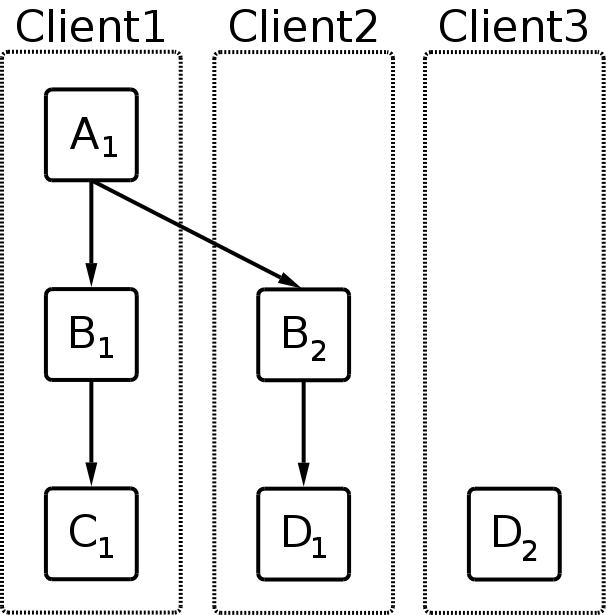
Now let's see what happens when we want to call the program for client3. We know we need to start with function A1, since there is only version of function A:
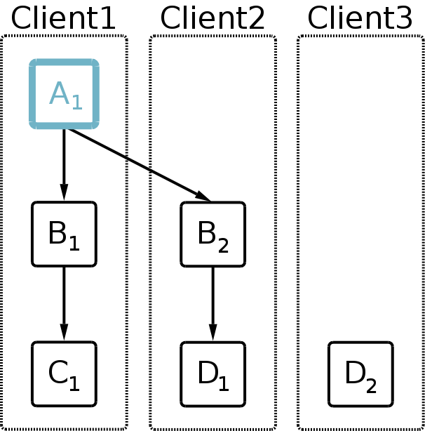
But at this point we have two choices for function B. All we know for client3 is that we're supposed to use function D2, so we're left to guess about function B. So we try the first one, function B1:
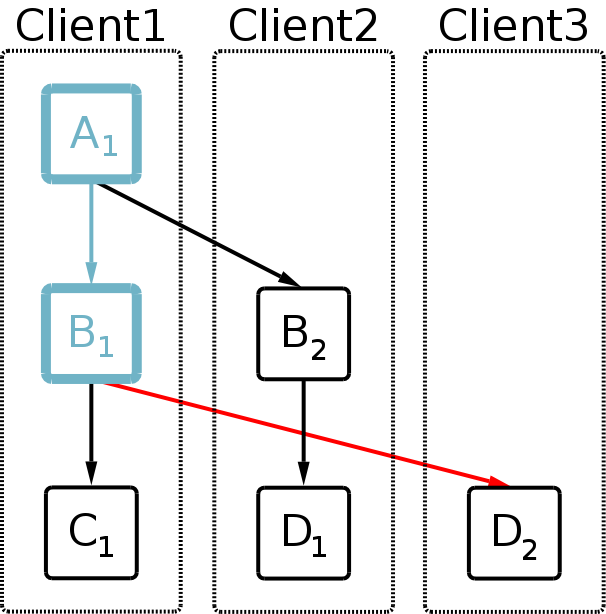
It's not until function B1 tries to call some function C that we discover a problem.
This is where the current solutions break down.
Certainly for this example, it is easy to imagine a developer telling the binding system: oh yea and client3 is going to have to use function B2 as well. But more realistic call graphs are much more complicated than this; so the developer would have to specify which functions to use going back many levels.
And then when there is a change in these upper level shared functions later on, it will affect the call graphs for many clients.
So the current solutions don't scale well.
Continuing on with our example; what we need to do at this point is back up and try the other B function:
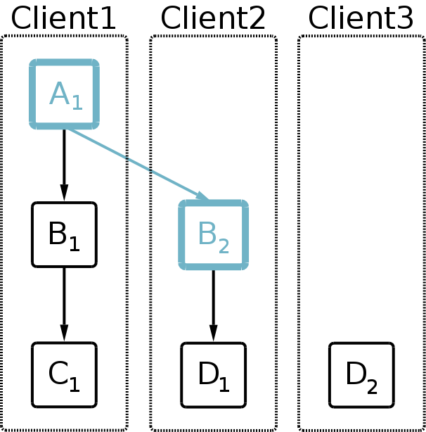
After doing this, we discover the solution for the final call graph:
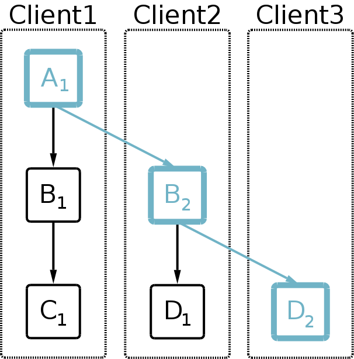
What's Needed
By looking at this example, we discover two things about how to solve this problem:
Do function selection prior to calling any of the functions.
We can't wait until one function calls another to figure out what to do, because we may change our minds!
Use a standard backward-chaining rule-based algorithm.
The process of first trying function B1, then backing up and trying function B2 is exactly the process used in backward-chaining rule-based systems like prolog. They call it backtracking.
Applying Backward-Chaining to Code Reuse
The next question is how do we use a backward-chaining system to produce function call graphs?
Let's examine, conceptually, what a set of backward-chaining rules would look like to find a solution to this problem. Then we can determine how to turn this into a function call graph.
The following diagram shows goals as dotted line boxes around the rules that prove that goal. In this example, some goals only have one rule and some have two.
We also see how rules link to other goals. For example, rule Use B1 and rule Use B2 both prove the same goal: Find B. But Use B1 links to the Find C goal, while Use B2 links to Find D.
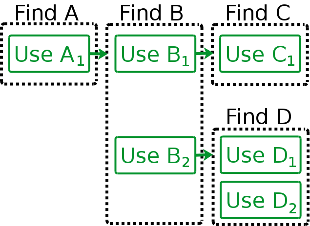
Now we can follow how these rules would be run by the knowledge engine:
- The whole process is kicked off by asking the knowledge engine for a solution to Find A.
- There is only one rule for Find A: Use A1, so the knowledge engine tries this rule.
- Use A1 needs a solution to Find B.
- The knowledge engine tries the first rule for Find B: Use B1.
- Use B1 needs a solution to Find C.
- The knowledge engine tries the only rule for Find C: Use C1, which fails for client3!
The situation now looks like:
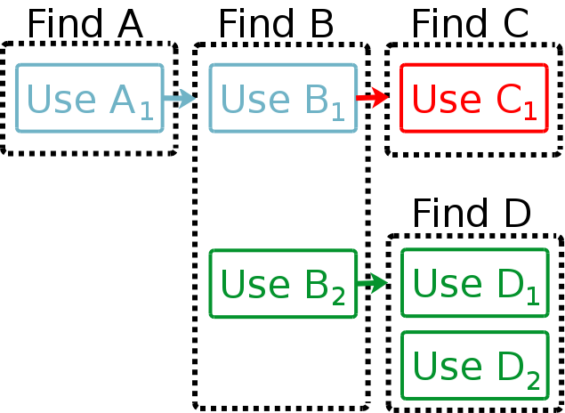
Continuing on:
- Since there are no other rules for Find C, the Find C goal fails.
- Which means that the Use B1 rule fails.
- So the knowledge engine tries the next rule for Find B: Use B2.
- Use B2 needs a solution for Find D.
- The knowledge engine tries the first rule for Find D: Use D1, which fails for client3.
- The knowledge engine tries the next rule for Find D: Use D2, which succeeds for client3!
- The Find D goal succeeds.
- The Find B goal succeeds.
- And the Find A goal succeeds.
When we achieve final success, we have the following situation:
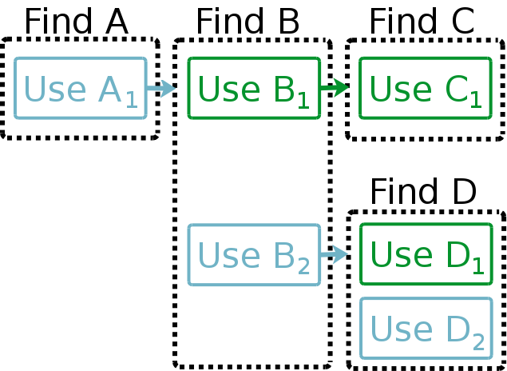
What remains is to translate this into a function call graph.
It becomes obvious that we want to attach our python functions directly to the backward-chaining rules:
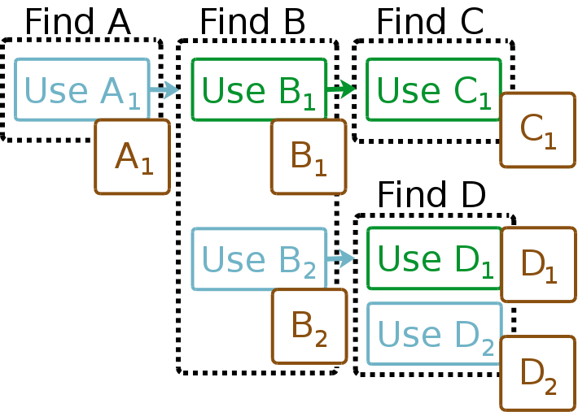
Pyke
Pyke KRB Syntax
How does all of this look in Pyke?
Pyke has its own language for rules, which it compiles into python source modules and then imports. This gives a performance boost by circumventing nearly all of the inference engine interpretation logic. It also makes it very easy to embed short python code snippets directly within the rules to help out with the inferencing. This keeps the inference mechanism simpler as it does not have to deal with things that are already easy in a procedural language (like arithmetic and simple list manipulation).
The Pyke rule source files are called knowledge rule bases and have a .krb suffix.
We'll continue with the previous example here.
First, let's look at the rules before we attach the python functions. Here's three of the rules:
use_B2
use find_B($client)
when
check_function($client, B, 2)
find_D($client)
use_D1
use find_D($client)
when
check_function($client, D, 1)
use_D2
use find_D($client)
when
check_function($client, D, 2)
Note that Pyke uses a $ to indicate pattern variables (anonymous pattern variables start with $_).
The check_function goal checks to see what version of the indicated function should be used for this client. If this is the incorrect version, it fails. If there is no indication for this function, it succeeds to allow guessing.
Attaching Python Functions to Backward-Chaining Rules
Here are the last two rules with the python code added. The rules have the python function attached to them so that the function can be returned from the goal as an additional parameter. Because this parameter does not affect the inferencing process, it is a hidden parameter.
These examples just show one line of python code, but you may have as many lines as you want:
use_D1
use find_D($client)
when
check_function($client, D, 1)
with
print "D1"
use_D2
use find_D($client)
when
check_function($client, D, 2)
with
print "D2"
Pyke calls the function call graphs plans. This terms applies to both the final top-level call graph, as well as intermediate call graphs.
Calling Subordinate Plans
Now we do the same thing to add python code to the use_B2 rule:
use_B2
use find_B($client)
when
check_function($client, B, 2)
find_D($client)
with
print "B2"
We have code for the B2 function, but how does it call the plan returned from the find_D goal?
The most common way is:
use_B2
use find_B($client)
when
check_function($client, B, 2)
find_D($client)
$$()
with
print "B2"
In general, there may be many goals in the when clause that produce plans. Each would have an indented line of python code under it with $$ indicating the subordinate function. These indented lines are combined with the lines in the with clause to form the complete python function for this rule (with the differences in indenting levels corrected).
But in this case, this would mean that print "Dx" would be executed before print "B2", which seems backwards.
To call the subordinate plan within the with clause, there is an alternate mechanism:
use_B2
use find_B($client)
when
check_function($client, B, 2)
find_D($client) as $d
with
print "B2"
$d()
The as $d clause stores the plan function in pattern variable $d rather than adding a call to it to the with clause. Then you can decide in the with clause whether to call it, when to call it, how many times to call it, etc.
Note that pattern variables in general can be used within the python code. These are replaced by their final bound values (as constants) after the top-level goal has been proven. Thus, the rules can also be used to determine and set constant values within the plan functions to further customize the code. This is the reason that the code for the attached python functions is placed directly in the .krb file rather than in a separate python module.
Some Final Points about Plans
Function parameters are specified at the end of the use clause with an optional taking clause:
use_B2 use find_B($client) taking (a, b = None) ...A completed plan appears as a normal python function.
Plans may be pickled and reused.
- If you add functools.partial to copy_reg.
You don't need to import all of Pyke to unpickle and run a plan.
- Only one small Pyke module is needed.
Other Capabilities
Pyke also supports forward-chaining rules:
fc_rule_name foreach fact_base_name.fact_name(pattern...) ... assert fact_base_name.fact_name(pattern...) ...- Pyke runs all of the forward-chaining rules whose foreach clause succeeds prior to running any backward-chaining rules. Thus, forward-chaining rules can not call backward-chaining rules and vice versa. But backward-chaining rules can examine facts asserted by forward-chaining rules.
There are different kinds of knowledge bases:
- Fact Bases:
- simply store facts.
- Rule Bases:
- store both forward-chaining and backward-chaining rules.
- can use rule base inheritance to inherit, and build upon, the rules from
another rule base.
- But only single inheritance.
- Thus each rule base has a unique root rule base.
- All rule bases that share the same root form a rule base category.
- allow selection of which rule base(s) to use through rule base
activation.
- But only one rule base per rule base category may be active at one time.
- Extensibility. You can write your own knowledge bases. These might:
- look up facts in a database
- ask users questions
- probe hardware/software settings
- Fact Bases:
Initial Results
After writing Pyke's younger brother, it occurred to me that backward-chaining could be used to automatically figure out how to join database tables together and generate SQL statements.
And if the backward-chaining rules could see which substitution variables are needed by an HTML templating system, it could automatically generate the SQL to get these data and build the code to update the template.
It seemed that it would no longer be necessary to include anything that looks like code in the HTML templates. The graphic designers could just add simple attributes to their tags and the backward-chaining system would figure out the rest. This would mean that the programmers don't need to modify the HTML templates, and the graphic designers could maintain full ownership of the HTML.
I had a WSGI front-end that would simply assert the data passed to it as facts.
The forward-chaining rules took these starting facts, parsed the cookie information, form information, browser information, and url, determined whether the user was logged in, figured out which client the request was for, established all of this as additional facts and activated the appropriate rule base for this client.
Then the WSGI front-end simply asked for a proof of the process() goal and executed the resulting plan function which returned the final HTTP status codes and HTML document.
For a page retrieval (vs. form action), the process goal used two sub-goals:
- A format_retrieval goal that read the HTML template, and built a plan to render the template, given the needed data. This goal also returned a simple descriptor of this needed data as part of its inferencing.
- A retrieve goal then took that descriptor of the needed data, built the necessary SQL statements, and cooked them into a plan to execute those statements and return the needed data as a simple dictionary.
Then the two sub plans were combined in the reverse order, to first retrieve the data and then populate the template, for the final plan that went back to the WSGI front-end.
The Pyke examples/sqlgen and examples/web_framework are simplified examples that you can look at.
Now, as it turned out, the company had been running without a president for quite awhile, and had finally hired a new president.
So just as I finished the SQL generation logic to handle unique data (vs. multi-row data) and was preparing to show some demonstrations; our new president, coming from a java background and apparently never having heard of python, decided to cancel the project.
End of contract!
Code Reuse through Automatic Programming
The fundamental lesson learned was that this technique ends up being far more capable than what I had first imagined.
More than producing adaptable libraries capable of using B1 or B2 at some point in their call graphs, this approach leads to something more akin to the back-end of a compiler -- except that the compiler front-end does not target a textual language that needs to be written and parsed; but is rather a simple observer of already known facts:
Show me your schema, and I'll build your SQL statements.
Show me your HTML templates, and I'll build the code to populate them for you.
This seems to change the whole concept of code reuse; elevating it from the realm of static libraries, to the realm of dynamic automatic programming.
Going Forward
Thinking that others might find this useful, I've re-implemented the underlying knowledge engine from scratch, with numerous improvements gained from the experience of the first attempt, and made it open source.
With the backward-chaining rule base system, many applications are possible:
- Complicated decision making applications.
- Compiler back-ends.
- The .krb compiler uses Pyke.
- Automatic SQL statement generation.
- Automatic HTML generation/template processing.
- The control module for a web framework tool.
- Incorporate new custom functions into a large set of standard functions, which may change the selection or configuration of standard functions in other parts of the program.
- Automatically re-distribute the modules of a system over different programs and computers to meet a wide range of performance and capacity goals.
- Diagnosis systems.
- E.g., Automated customer service systems.
- Program or library customization for specific uses.
- Instantiate, configure, and interconnect networks of objects to meet a specific need or situation.
Up to this point, I've been flying solo. For this project to move forward to fully explore its capabilities, I'm going to need help!
I'd like to see several early adopters run with this and try it out in different domains. Pyke is in alpha status now and is ready to start to lean on.

This paper is licensed under a Creative Commons Attribution 3.0 Unported License.